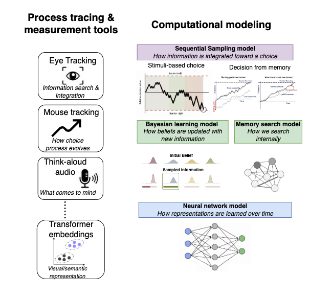

About
I am a MindCORE Fellow and PennAI Fellow at the University of Pennsylvania, working with Sudeep Bhatia, Joe Kable, and Anna Schapiro. Before joining Penn, I completed my Ph.D. in Psychology at The Ohio State University with Ian Krajbich and spent time as a visiting researcher at UCLA. During my Ph.D., I interned at Meta FAIR Analytics and Snap Research.
I study how the mind learns, decides, and generalizes over time. My research examines the cognitive processes that unfold during learning and decision making, with a particular focus on how visual attention and memory guide these processes. At the core of my work are dynamic computational models of decision making, which I build and test with process-tracing tools such as eye-tracking and mouse-tracking, alongside methods from natural language processing and large language models.
My Research
My research program centers on three interconnected themes: (1) how information sampling shapes decisions, (2) how people selectively search for information, and (3) how experience shapes the knowledge that guides behavior.

These models map onto three research themes — click to see the related publications: